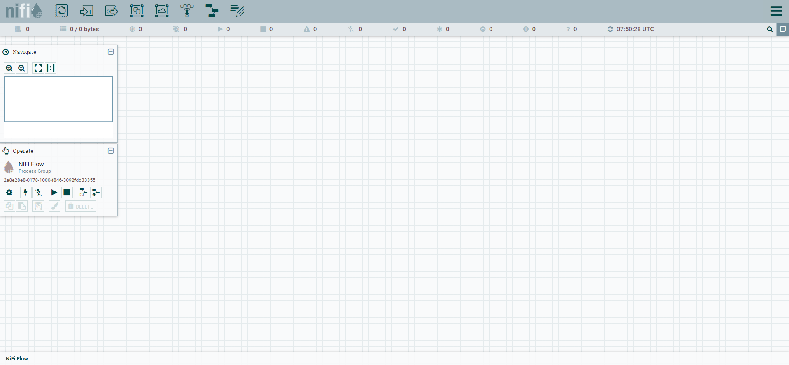

Apache Nifi
Contents
Apache Nifi¶
An easy to use, powerful, and reliable system to process and distribute data

Architecture¶

Origin¶
Apache NiFi is a software project from the Apache Software Foundation designed to automate the flow of data between software systems. Leveraging the concept of Extract, transform, load, it is based on the “NiagaraFiles” software previously developed by the US National Security Agency (NSA), which is also the source of a part of its present name – NiFi. It was open-sourced as a part of NSA’s technology transfer program in 2014
Hortonworks added in HDP platforms and now in Cloudera is still pitching (but maybe less)
https://www.cloudera.com/products/open-source/apache-hadoop/apache-nifi.html
It’s all about dataflow¶

With some high-level challenges¶
Systems fail
Networks fail, disks fail, software crashes, people make mistakes.
Data access exceeds capacity to consume
Sometimes a given data source can outpace some part of the processing or delivery chain - it only takes one weak-link to have an issue.
Boundary conditions are mere suggestions
You will invariably get data that is too big, too small, too fast, too slow, corrupt, wrong, or in the wrong format.
What is noise one day becomes signal the next
Priorities of an organization change - rapidly. Enabling new flows and changing existing ones must be fast.
Systems evolve at different rates
The protocols and formats used by a given system can change anytime and often irrespective of the systems around them. Dataflow exists to connect what is essentially a massively distributed system of components that are loosely or not-at-all designed to work together.
Compliance and security
Laws, regulations, and policies change. Business to business agreements change. System to system and system to user interactions must be secure, trusted, accountable.
Continuous improvement occurs in production
It is often not possible to come even close to replicating production environments in the lab.
Let’s try it¶

 https://www.mail-archive.com/dev@nifi.apache.org/msg20414.html
https://www.mail-archive.com/dev@nifi.apache.org/msg20414.html
https://cwiki.apache.org/confluence/display/NIFI/NiFi+Docker+Container+Improvements
https://issues.apache.org/jira/browse/NIFI-9554
docker run --name nifi -p 8443:8443 -d apache/nifi:latest

Check Logs to get secrets
Open the web UI https://localhost:8443/nifi/ 
Hello Twitter¶
Inspired from
Remember to check date (expecially in WSL) since Twitter API gives 401 if date is not correct!